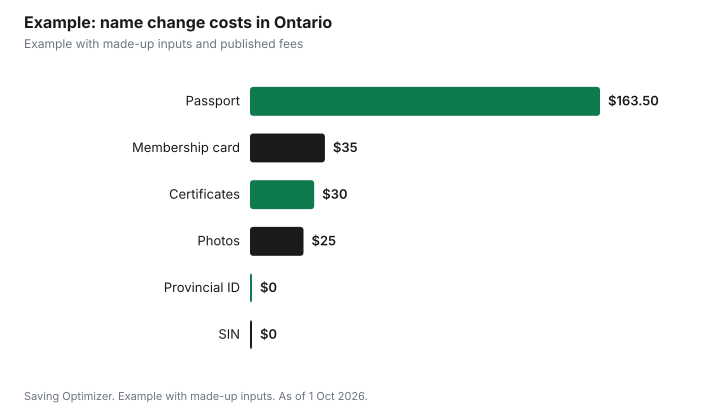

Weddings · Canada
Changing Your Name After Marriage in Canada: Documents, Fees and the Right Order

To take your spouse's last name in Canada, start by ordering your marriage certificate, because nearly every update depends on it. In Ontario, the certificate costs $15 for regular online service or $45 for premium, and it is not the Record of Solemnization your officiant gave you; you have to apply for it. ServiceOntario then updates your health card, driver's licence and Photo Card for free, with new cards arriving by mail in 6 to 8 weeks. A new passport needs a new application, not a renewal, at $163.50 for 10 years or $122.50 for 5 years for adults, as of 1 October 2026. Your SIN record, bank, employer and other accounts follow.
Key takeaways
- Order the marriage certificate first; it is not issued automatically.
- Ontario: health card, licence and Photo Card updates are free.
- Use the full surname as on the certificate; part of a hyphenated name needs a legal name change.
- Passport: new application with your marriage certificate.
- Update your SIN record; Service Canada says there is no fee.
- Example with made-up inputs: total cost for one spouse.
Ontario rules for assuming a spouse's name
Ontario's ServiceOntario page says you can assume your spouse's last name after marriage on government documents such as your health card, driver's licence and Ontario Photo Card, at no cost. It does not change the name on your Ontario birth registration or birth certificate. You must record the full last name as it appears on the marriage certificate, including a hyphenated name; if you want only part of a hyphenated name, you must apply for a legal name change. The old Election to Change Surname service is discontinued. Other provinces set their own rules; check with your provincial vital statistics office.
The marriage certificate
| Service | Fee | Timing |
|---|---|---|
| Regular, online | $15 | 15 business days plus mailing |
| Premium | $45 | 5 business days, courier delivery |
The $15 base fee is set in Ontario Regulation 511/01. The marriage must be registered first, so there can be a wait after the wedding before you can order. Ordering online is the simplest route; keep the confirmation number until it arrives. Order more than one copy if you plan to update several accounts at once.
Documents to update
| Document or account | What you need | Fee |
|---|---|---|
| Ontario health card, driver's licence, Photo Card | Marriage certificate, photo health card, licence or Photo Card, at ServiceOntario | $0 |
| SIN record | Identity document plus marriage certificate (not for Quebec residents married after 1 Apr 1981) | No fee |
| Passport | New adult application, ID in new name, marriage certificate | $163.50 (10 years) or $122.50 (5 years) |
| CRA, employer, bank, credit cards | Each organization's own process; usually a copy of the marriage certificate | Ask each |
| Insurance, pensions, investment accounts | Each provider's own form | Ask each |
| Utilities, phone, memberships, loyalty programs | Online update or call | Ask each |
ServiceOntario says that for other organizations you should contact each one and ask what they require, and that most will ask for a copy of your marriage certificate.
SIN record
Service Canada says you are required by law to update your SIN record when you change your legal name, and lists a marriage certificate, marriage statement or marriage solemnization as a supporting document for a family name after marriage, except for Quebec residents married after 1 April 1981, regardless of where the marriage took place. You can update online, by mail or in person. Service Canada's update page says there is no fee.
Passport
IRCC says that if you changed your name after marriage, you must apply for a new passport rather than renew, and include identity documents showing your new surname plus the marriage certificate. As of 31 March 2026, an adult passport costs $163.50 for 10 years or $122.50 for 5 years when applying in Canada. IRCC says that from 1 April 2026, applications are processed within 30 business days or the fee is refunded, subject to its conditions.
Order of operations
- Order the marriage certificate (and extra copies) as soon as the marriage is registered.
- Update provincial ID at ServiceOntario: health card, driver's licence, Photo Card.
- Update your SIN record.
- Apply for a new passport, unless you have travel booked soon (see below).
- Tell your employer and the CRA.
- Update banks, credit cards, investments, pensions and insurance.
- Update utilities, phone, memberships, professional licences and loyalty programs.
- Keep a list with dates, so nothing is missed.
Travel bookings
Check your airline's rules, but plan for the name on your ticket to match the passport you travel with. If your honeymoon is soon after the wedding, book tickets in the name on your current passport and wait until you return to apply for a new one. Applying for a new passport while a trip is booked risks travelling without one. Update loyalty programs after the new passport arrives.
Keeping your name or going back
You do not have to change your name. If you assumed a spouse's name and later want your previous name back, rules depend on how you changed it. In Ontario, if you used the discontinued Election to Change Surname, you can file an Election to Resume Former Surname (Form 2) for $25, which issues a change of name certificate and a new birth certificate if you were born in Ontario. Otherwise, a legal name change may be needed.
Example with made-up inputs
These numbers are an example with made-up inputs, apart from published fees. One spouse in Ontario orders two marriage certificates by regular service ($30), updates their health card and licence ($0), updates their SIN record ($0), applies for a 10-year passport ($163.50) with made-up photos at $25, and pays a made-up $35 to replace a professional membership card. Total: $253.50. Waiting until after the honeymoon to change the passport avoids a made-up $180 airline name-change fee.
| Item | Cost |
|---|---|
| Two marriage certificates (regular) | $30.00 |
| Health card and licence | $0.00 |
| SIN record | $0.00 |
| 10-year passport | $163.50 |
| Passport photos (made-up) | $25.00 |
| Membership card (made-up) | $35.00 |
| Total | $253.50 |

Common mistakes
- Bringing the Record of Solemnization instead of the certificate.
- Using part of a hyphenated name without a legal name change.
- Renewing a passport instead of applying for a new one.
- Booking travel in a name that does not match your passport.
- Forgetting the SIN record or CRA.
Related: marriage licence fees and CRA marital status after the wedding.
Sources
- ServiceOntario, Change your last name, ontario.ca, as of 1 Oct 2026.
- ServiceOntario, Get or replace an Ontario marriage certificate; Ontario Regulation 511/01, as of 1 Oct 2026.
- Employment and Social Development Canada, Update your Social Insurance Number record; SIN required documents, canada.ca, as of 1 Oct 2026.
- Immigration, Refugees and Citizenship Canada, Passport fees; Changing your name on a passport, canada.ca, as of 1 Oct 2026.
- Photo, membership and airline fees in the example are made-up inputs.
Frequently asked questions
How much does it cost to change your name after marriage in Ontario?
Updating your health card, driver's licence and Photo Card is free. A marriage certificate costs $15 regular or $45 premium, and a new adult passport costs $163.50 for 10 years or $122.50 for 5 years.
Can I use the Record of Solemnization to change my name?
No. Ontario requires the marriage certificate, which you must apply for.
Can I take only part of my spouse's hyphenated name?
Not by assuming the name. Ontario says using only part of a hyphenated name requires a legal name change.
Do I renew my passport after a name change?
No. IRCC says you must apply for a new passport with your marriage certificate and ID in your new name.
Do I need to update my SIN?
Service Canada says you are required by law to update your SIN record when you change your legal name. There is no fee.
How long does it take to get new Ontario ID?
ServiceOntario says updated documents arrive by mail in 6 to 8 weeks.
Researched and drafted with AI assistance and fact-checked against official Canadian sources. How we create content.
Disclosure: Saving Optimizer may earn a commission if a partner link is added later. No partnership is claimed on this page. Education only, not legal advice.